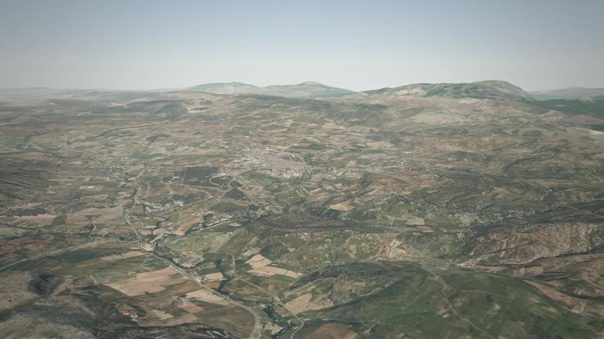
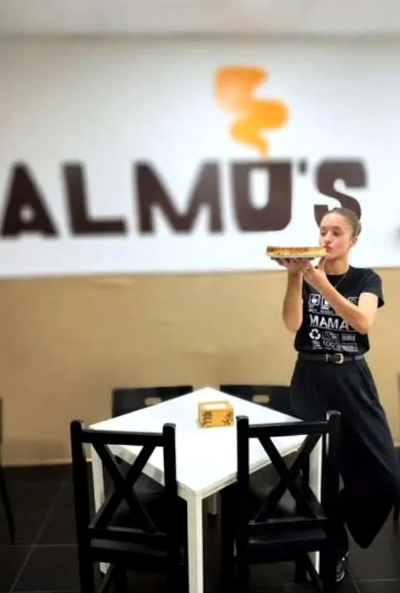
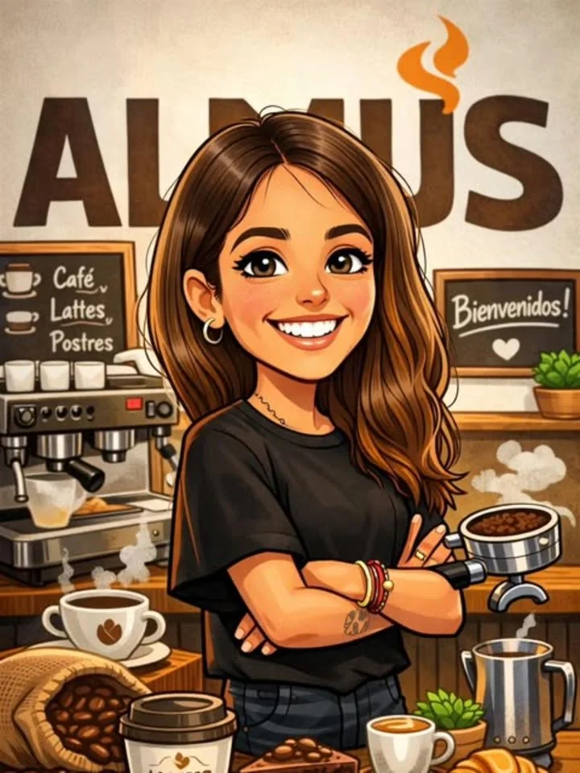
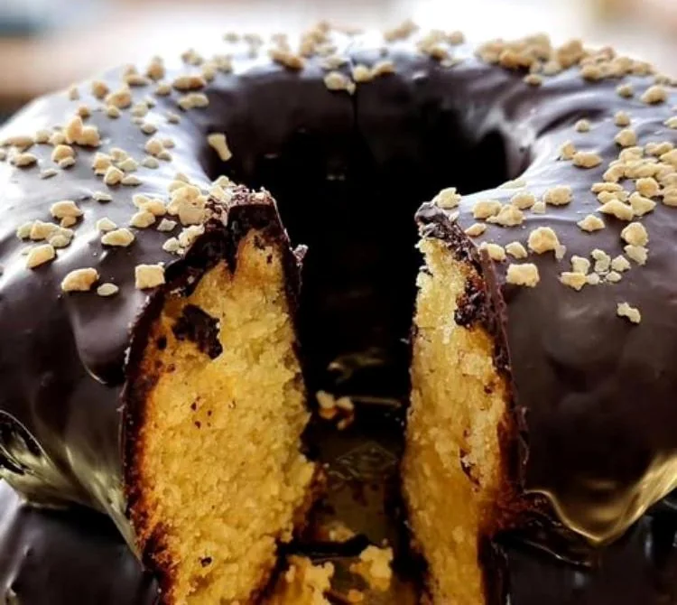
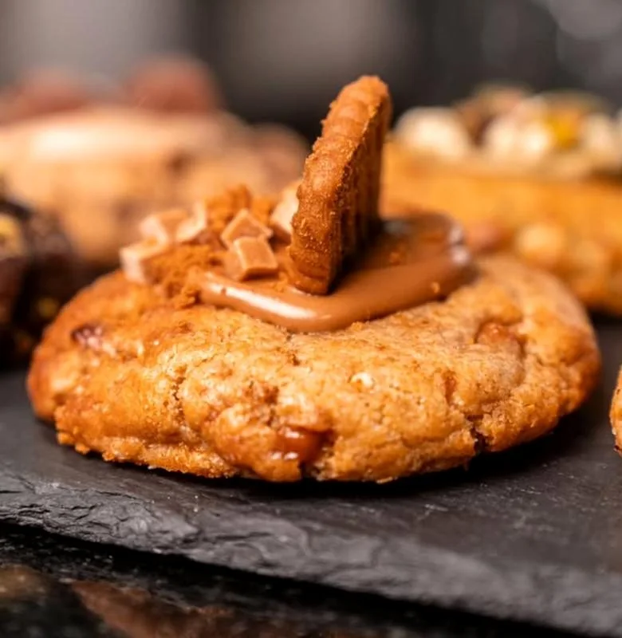
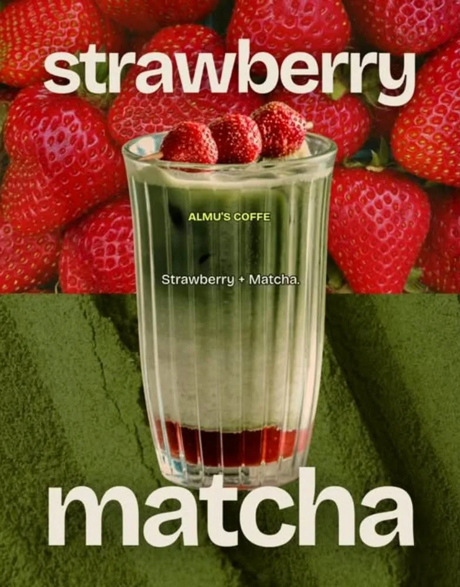
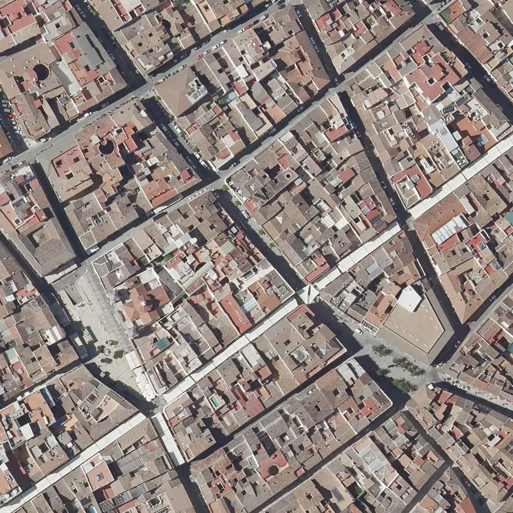

Buenos días,
Almu's Coffee & Bar, cafetería en Ronda
Café de especialidad, ecológico y sin torrefacto, en el centro de Ronda. Desayunos y meriendas con pan artesano, también sin gluten y sin lactosa.
Ronda no te pregunta cómo estás.
Nosotros sí.

- 7/7
- abrimos todos los días
- +20
- años de oficio detrás de la barra
- 2024
- en C. Sevilla desde mayo
Dicen que es el único que no les sienta mal.
Ortofotos y relieve: PNOA y MDT cedidos por © Instituto Geográfico NacionalPNOA y MDT © IGN
Saltar el vueloNuestra historia
Un sueño,
no una cadena.
Café sin prisas en el centro de Ronda.

Almu's es el proyecto de Almudena García. Empezó a trabajar en hostelería muy joven y, tras más de veinte años detrás de la barra, decidió abrir algo suyo con el apoyo de su familia y el empujón de su marido.
Hubo además una razón muy personal: su hija pequeña es intolerante a la lactosa, y comer fuera de casa era un problema. Por eso, desde el primer día, la prioridad fue buscar los mejores productos para que cualquiera pueda desayunar y merendar aquí, tenga la alergia o intolerancia que tenga.
Abrimos en mayo de 2024, el mismo fin de semana de los 101 Kilómetros de La Legión. Hoy la mayoría de quienes nos visitan son vecinos de Ronda que ya forman parte de la familia Almu's. Para nosotros, lo más importante es que te sientas como en casa.
«Cuando se trabaja duro y se sueña muy fuerte, siempre se obtienen resultados.»

Para todos
Que nadie se quede sin merendar.
Productos artesanos sin gluten y sin lactosa, con pan de Piquito Bakery, obrador sin gluten. Y si no tomas lactosa, pide tu café sin lactosa al hacer el pedido.
- Mollete
- montejaqueño, de la Panadería Pastelería Hnos. Gil
- Masitas
- los miércoles y los viernes
- Sin gluten
- tostadas con pan de Piquito Bakery
El mismo mimo a las 8:00 que a las 20:00.
Lo que encontrarás en la barra. La oferta del día, en el local y en nuestro Instagram.
Cafés especialidad · ecológico · sin torrefacto
Café de especialidad eco
Ecológico y sin torrefacto, en todas sus versiones.
Café para llevar
Para empezar la ruta por Ronda con el café en la mano.
Irish coffee
Uno de los favoritos que nuestros clientes mencionan en sus reseñas.
Opción sin lactosa sin lactosa
Pídelo al hacer tu pedido.
Matcha, tés y batidos
Matcha eco
Matcha ecológico, cada vez más pedido en la barra.
Strawberry + Matcha
Matcha con fresa.
Selección de tés
Una carta amplia de tés.
Batidos
Para los que prefieren algo fresquito.
Tostadas y molletes pan artesano
Mollete montejaqueño
Pan artesano de Montejaque.
Masitas mié · vie
Los miércoles y los viernes.
Tostada en pan sin gluten sin gluten
Con pan de Piquito Bakery, obrador sin gluten.
Bocadillos
Para desayunar desde primera hora.
Dulces y bar
Bizcochos sin gluten sin lactosa
Como nuestro bizcocho con cobertura de chocolate.
Cookies
Para acompañar el café de la tarde.
Cervezas y bebidas
Porque también somos bar.
¿Alergias o intolerancias? Avísanos al pedir: tenemos productos sin gluten y sin lactosa.
Son las cinco.
Toca merendar.
Desayunos y meriendas desde nuestra barra. Lo más comentado en las reseñas: las meriendas, las tostadas y los dulces.

Cookies · para la merienda Bizcocho · sin gluten y sin lactosa 
Strawberry + Matcha El salón · C. Sevilla, 5
Lo dice la familia Almu's.
4,5en Google · más de 180 reseñas
5,0en Tripadvisor
«Trato espectacular, las camareras son encantadoras y te tratan como en casa.»
«Tienen un té matcha orgánico que está buenísimo, sus tostadas de pan casero son únicas.»
«Buena relación calidad precio y tanto el café como el pan están súper ricos.»
«Very good coffees, and excellent treatment.»
Los peques también piden venir.
Dentro del local hay un rincón para los peques, con colchoneta y juegos. Los niños tienen que jugar, moverse y hacer ruido, y muchas veces son ellos quienes piden venir. Para nosotros, eso es un orgullo.
Ven temprano.
Quédate a merendar.
Dónde
C. Sevilla, 5
Bajo, Edificio Multicentro
29400 Ronda, Málaga
Horario
| Lunes a viernes | 8:00–13:00 · 16:00–20:00 |
|---|---|
| Sábado y domingo | 8:30–13:00 · 16:30–20:00 |
Contacto
Servicios
Wifi · Efectivo y tarjeta
Para llevar · Zona infantil
